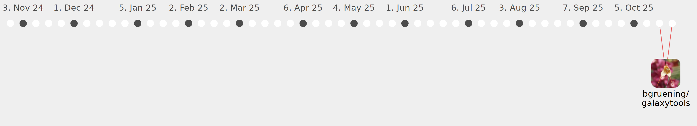

kgerb

Commits all-time: 59
Commits last year: 59

(57)
- e1872c8
- c65be02
- ca805cf
- 3dea4cb
- 36ccda5
- 23722dd
- 183d554
- 8f6273d
- a75652b
- 6d32ee0
- 896f569
- 98851bb
- 5026486
- 5bc97f3
- 73a8b51
- 7fd4c1a
- d0209c1
- 0bf35cc
- 891302c
- b1fbede
- dc088f2
- 390c84a
- 260eca5
- 7223238
- 86924ae
- 9ba37a2
- a441eba
- 826faf1
- 71e3e2b
- 56e410d
- 0ad0c73
- ffd668e
- ca1390e
- 0a24543
- edd731b
- 1332318
- f2bad51
- b43c532
- 570cb7f
- 0715294
- f5f1d89
- 8c894b2
- ef08451
- 302577d
- 4358dd4
- b3780cc
- 48a2ce7
- ffebc04
- a46a7cd
- d91cf3b
- 1d3ded2
- e8334bc
- 990fb6c
- fe65e77
- fe8f0be
- b02bdb3
- d9da017
(2)